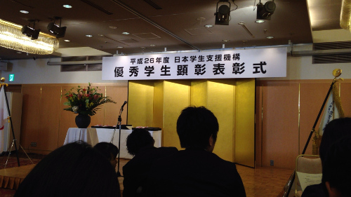
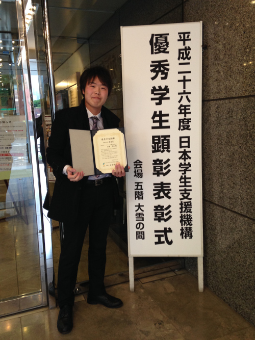

Achievements
Awards
In 2014, for the first time in the history of the university, 4th-year student of Software Engineering Lab Mr. Keisuke Kato was selected for the 2014 JASSO Award of Excellence (Scientific Category). [Link]
Scientific Achievements
In 2014, for the first time in the history of Software Engineering Lab, papers of three undergraduate students Mr. Togashi, Mr. Hoshi, and Mr. Miyashita were accepted for presentations at three high rank conferences. They appeared in the prestigious proceedings published by IEEE, and Lecture Notes published by Springer , and proceedings published by Taylor & Francis Group . These papers discuss the results of undergraduate research of these students.
業績
受賞
2014年、私たちの研究室のメンバーの学部4年の加藤恵亮さんが日本学生支援機構の平成26年度優秀学生顕彰の学術分野の優秀賞に選ばれました。会津大学の学生がこの賞を受賞するのは初めてのことでした。優秀学生顕彰は、”学術”、”文化・芸術”、”スポーツ”、”社会貢献”の4分野にそれぞれ大賞、優秀賞、奨励賞の三種があり、経済的理由により修学に困難がありつつも、学術、文化・芸術、スポーツ、社会貢献の各分野で優れた業績を挙げた学生に対して、これを奨励・支援し、21世紀を担う前途有望な人材の育成に資することを目的としています。 詳細
研究業績
2014年、3人の私たちの研究室の学部生が書いた研究論文が世界的権威ある国際学会での口頭発表に受理され、論文がそれぞれの学会議事録（IEEE, Lecture Notes published by Springer, and proceedings published by Taylor & Francis Group）に掲載されました。Togashi, Miyashita, Hoshi